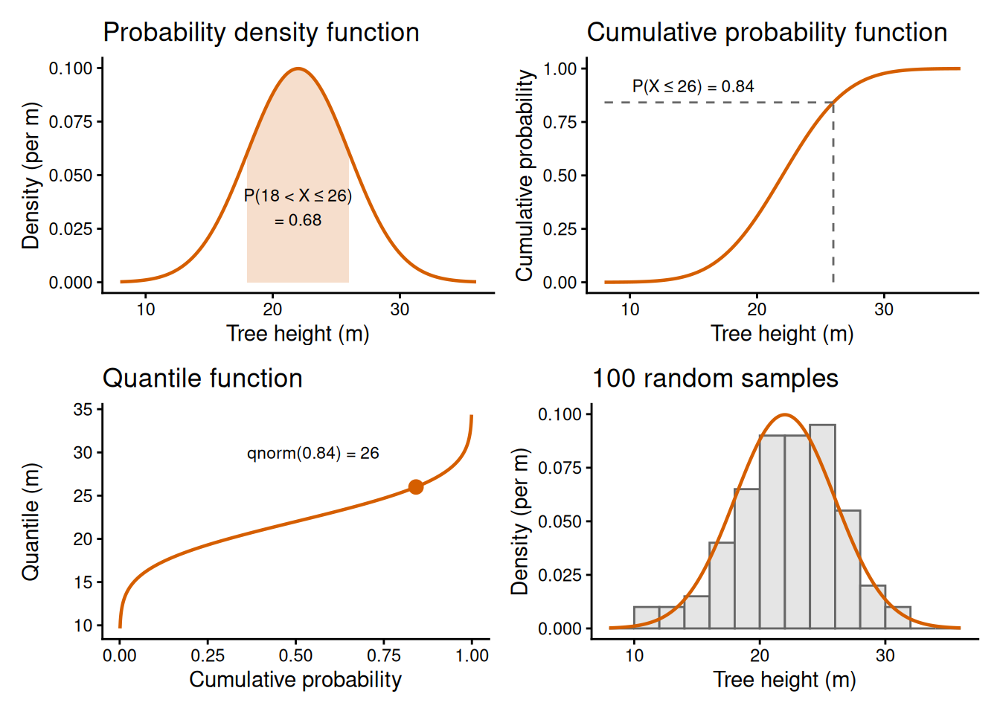
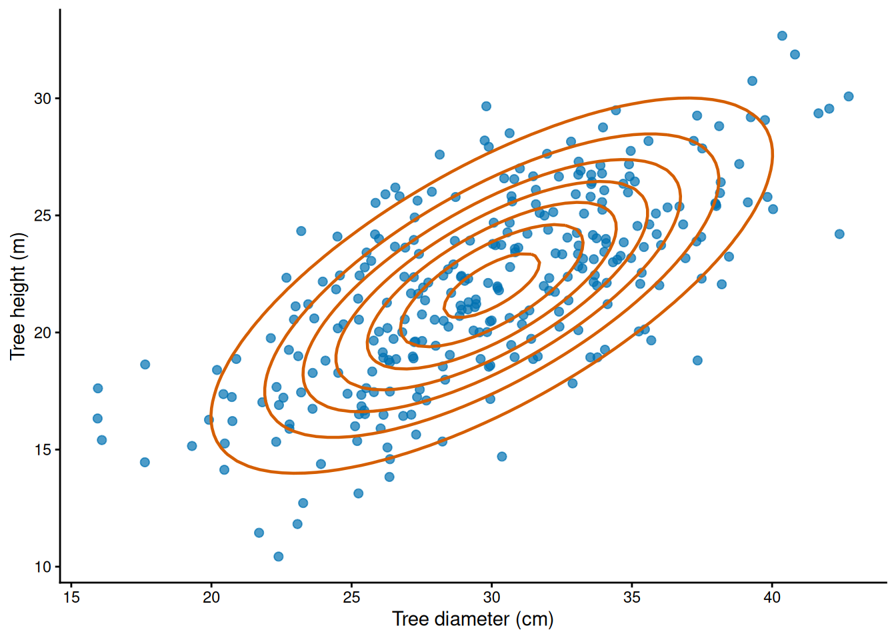

# size = n, prob = p in formula for Binomial
seed_survival_probability = 0.4
seed_count = 4
dbinom(x = 2, size = seed_count, prob = seed_survival_probability)
pbinom(q = 2, size = seed_count, prob = seed_survival_probability)
qbinom(p = 0.5, size = seed_count, prob = seed_survival_probability)
rbinom(n = 10, size = seed_count, prob = seed_survival_probability)Probability distributions
1 Introduction
In this chapter, we learn how to use probability distributions as the central pillar to build our statistical models. We focus on count data first. You may count, for example, surviving seedlings, flowering plants, or wildlife camera detections. We represent these counts using discrete random variables which take separate, countable values such as \(0, 1, 2, \ldots\). We then extend the same ideas to measurements such as tree height, body mass, or vegetation cover. We represent these measurements using continuous random variables, which can take any value within an interval.
The concepts are the same for both types of data, but the probabilities are calculated in a different way, so the chapter first covers discrete distributions and then continuous distributions. After that, we look at joint distributions of several random variables, at expectations, and at how to choose a distribution. This chapter is about the distributions themselves. How samples of data relate to distributions is the topic of Chapter 3.
2 Learning goals
In this chapter, we will cover:
- discrete random variables and probability;
- the four faces of a distribution (mass or density, cumulative, quantile and samplers);
- continuous random variables and probability density;
- the difference between probability mass and probability density;
- joint and marginal distributions and the assumption of independence;
- expectations, means and variances of distributions;
- how to choose a distribution, and the concept of overdispersion.
We will use the Binomial distribution as the example for discrete data and the Normal distribution as the example for continuous data. The Poisson, Negative Binomial and other distributions for count data, and the LogNormal, Beta and other distributions for continuous data, are described in the Supplement, which you will need for the practical.
3 Discrete probability distributions
3.1 Random variables and probability
A random variable is the quantity whose value is uncertain before we make that observation. For a count, its possible values are non-negative integers. We will use a hypothetical experiment on seed survival to illustrate how to model ecological count data. Suppose we randomly distribute several quadrats in a field and in each of them we place four seeds of a target species. We come back after a pre-specified period of time and we measure how many seeds survived inside the quadrat.
The random variable \(X\) keeps track of the possible counts of seeds that would survive in a quadrat. If the quadrat contains four seeds, then \(X\) can take any integer value from 0 to 4. Mathematically, this is expressed as:
\[ X \in \{0,1,2,3,4\}. \]
The support of a random variable is the set of values that the variable can take. In this case \(X\) can take a finite set of values. In other cases, there is no pre-specified maximum, such as the number of spores or insects that could fall into a trap. In those cases we will model count data with random variables that can take any non-negative integer value (i.e., \(\{0, 1, 2, ...\}\), formally known as countably infinite). Technically, this accounts for an infinite number of counts, though in practice the counts will always be finite and constrained to the relevant order of magnitude.
NoteDiscrete random variable
A random variable is discrete when it takes values from a finite or countably infinite set.
Note that \(X\) does not keep track of the actual seeds that survived in a particular quadrat, that is what we call an observation of the real world. Rather, \(X\) represents how likely we are to observe a particular number. That is measured by a probability. That is, a random variable will have a probability distribution associated with it that assigns a value between 0 and 1 to every possible observation or set of observations. For example, it might assign these probabilities:
| \(x\) | \(P(X=x)\) |
|---|---|
| 0 | 0.05 |
| 1 | 0.15 |
| 2 | 0.30 |
| 3 | 0.30 |
| 4 | 0.20 |
We can also define the probability of any set of values by addition of individual probabilities. For example, the probability that at least 3 seeds survive is:
\[ P(X \geq 3) = P(X = 3) + P(X = 4). \]
The probability that any value occurs is the sum of all the individual probabilities, and that sum must always be 1:
\[ \sum_{\forall x} P(X = x) = 1, \]
where \(\forall x\) means “for all possible values \(x\)”.
Note that the capital letter \(X\) refers to the random variable, while the lower-case \(x\) refers to a possible observation. This distinction looks fussy at first, but it helps to keep the model and the data separate once we start estimating parameters later in the course.
3.2 What do these probabilities mean?
We saw above that we could assign probabilities to the different possible observations and that probabilities obey some basic mathematical properties. What does it mean to say “the probability that 2 seeds survive is 0.30”? There are two complementary perspectives that one can take depending on how probability is being applied (see Chapter 1 for further details on applications of probability):
Epistemic probability1: If the goal is to predict the number of seeds that survive in a specific quadrat, probability represents how certain we are about each possible predicted value (e.g., in the table above I am twice as confident that the value will be 2 compared to 1). This relates to how much knowledge or information we have about the system we are predicting.
Aleatoric probability2: Probability can also represent the relative frequency at which different counts will be observed across all the possible replications of the same experiment or observation protocol. This relates to errors in measurements, and stochasticity and variability in ecological systems.
For many reasons, this course will focus on aleatoric probability as implemented by the Frequentist statistical paradigm3, so we will use probabilities to model the relative frequencies at which different observations (or, in Chapter 3, different parameter estimates) can occur.
3.3 The four faces of a distribution
When the set of possible observations is small we can keep track of probabilities in tables. However, as the number of possible observations increases this is not feasible. Instead, we use a probability mass function which is a formula that assigns a probability to every possible \(x\). From the mass function we can compute by countable addition the probability of any possible set of observations, which is what we call a probability distribution.
NoteProbability distribution
A probability distribution assigns probabilities to all possible sets of values of a random variable. Its foundation is a probability mass function.
There are many probability distributions that already exist, and we represent them by their probability mass function. The oldest and most basic distribution for discrete data is the Binomial distribution, discovered by Jacob Bernoulli in 17134. This distribution assumes that we are observing a fixed number of events, each of which can have two values (0 or 1) and each event has the same fixed probability of having the value 1. It makes sense to use this distribution for our seed survival example: the event is whether a seed survives (1) or not (0) and we assume all seeds have the same survival probability.5
The probability mass function of the Binomial is given by:
\[ P(X=x)=\binom{n}{x}p^x(1-p)^{n-x}, \]
where \(n\) is the number of events being observed, and \(p\) is the probability of an event having the value 1. I provide more details on this distribution (and others) in Section 7 and in the Supplement.
Every distribution has four functions that are interrelated6 Figure 1:
- Probability mass;
- Cumulative probability;
- Quantile;
- Random sampler.
In R, all of these functions are implemented for each distribution. The name of each function consists of a prefix letter followed by a shortened name for the distribution. The four faces of the Binomial distribution are implemented by functions dbinom, pbinom, qbinom and rbinom, respectively.
To illustrate the four faces, we will assume in our seed survival example that each seed has a probability of survival of \(0.4\) and that the variation in observations across different quadrats follows a Binomial distribution. In R:
Note that the first argument (x, q, p, or n) is always the same for all distributions in R. The other arguments are the parameters for a given distribution (in this case, size is \(n\) and prob is \(p\) in the formula above).
NoteThe four faces of distributions in R
For a distribution in R:
d*functions calculate probability massp*functions calculate cumulative probabilitiesq*functions calculate quantilesr*functions generate random samples
The first argument is conventionally named x, q, p, or n, respectively.
A cumulative probability function (\(F_X\)) is the result of adding probability masses up to and including a value \(x\) (q in pbinom):
\[ F_X(x)=P(X\leq x). \]
For example, \(F_X(3)\) is the probability that at most three seeds survive. The cumulative probability is always between zero and one, and it never decreases as \(x\) increases. We will not use it much in this course7.
A quantile function is the inverse of the cumulative probability function. That is, we supply a cumulative probability and ask at which value of \(x\) it is reached. Because we are dealing with discrete variables, we define the \(\alpha\)-quantile as the smallest \(x\) whose cumulative probability (p in qbinom) reaches or exceeds \(\alpha\), which mathematically is written as:
\[ q_\alpha=\min\{x:F_X(x)\geq\alpha\}. \]
We will use quantiles to describe a distribution numerically (e.g., the median of a distribution is the \(0.5\) quantile) as complements to expectations and moments (see later). We will also use quantiles to quantify parameter uncertainty as confidence intervals (see Chapter 3).
The fourth face is not so much a function as a procedure. A random sampler is a procedure that generates possible samples from the distribution8. This means a series of possible observations that are compatible with the distribution. For example, if we want to simulate a collection of 10 quadrats from the example above, we would generate 10 random samples from the Binomial distribution.
We will use random sampling throughout the course (we will call it simulation) as it is a versatile way of analysing the statistical properties of a model being fitted to data. We will discuss in more detail how samples relate to their distributions in Chapter 3.

When we simulate random samples in R, the computer does not observe a truly random physical process. It uses a deterministic algorithm to generate a pseudo-random sequence: a sequence designed to have the mathematical properties needed for random sampling. This is enough for the probability simulations we use in this course, while also making them reproducible.
A seed specifies the starting state of that algorithm. If you set the same seed before running the same simulation, R produces the same pseudo-random sequence again. We set a seed with set.seed(), usually once before a simulation or a batch of repeated simulations:
# Make a later random simulation reproducible.
set.seed(42)Changing the seed changes the sequence. Always set the seed at the start of your script or (even better) before any random sampling, to make sure that you generate reproducible results.
ImportantPractice: orchid fruit set
In a restoration plot, we tag six orchid flowers. Each of them has a probability of setting fruit of \(0.5\). Let \(X\) be the number of these flowers that set fruit.
- What values can \(X\) take?
- Use R to calculate (i) the probability that exactly four flowers set fruit and (ii) the probability that at most four set fruit, assuming a Binomial distribution.
- What is the meaning of the second probability calculated in point 2?
- Find the 0.75 quantile of \(X\). In words, what does this quantile tell you?
- Which R function prefix (
d,p,q, orr) did you use for each calculation?
TipSolution
The count can be any integer from 0 to 6. The exact-count probability uses dbinom(), the cumulative probability uses pbinom(), and the quantile uses qbinom().
flower_count = 6
fruit_set_probability = 0.5
# Calculate an exact probability, a cumulative probability, and a quantile.
dbinom(x = 4, size = flower_count, prob = fruit_set_probability) # 0.23[1] 0.234375pbinom(q = 4, size = flower_count, prob = fruit_set_probability) # 0.89[1] 0.890625qbinom(p = 0.75, size = flower_count, prob = fruit_set_probability) # 4[1] 4The quantile tells me at least 75% of the probability is on counts of four or fewer, but note that cumulative probability for four is 89%. The difference is due to the discrete nature of the counts.
The cumulative probability means that if we repeat this 6-plant experimental unit many, many times, 89% of them will have four flowers or less. Alternatively, it could mean that we are 89% sure that a particular 6-plant experimental unit will yield 4 flowers or less.
4 Continuous probability distributions
A continuous random variable can take any value within an interval of the real numbers, instead of a set of separate values. Its support is therefore an interval (e.g., all positive numbers, or all numbers between 0 and 1) and its values cannot be listed one by one. We use continuous random variables to model measurements such as height, body mass, leaf area, or vegetation cover. We will use the height of trees in a forest stand to illustrate how to model continuous data.
Let \(X\) be the height of a tree in metres. Between any two heights, say 22 m and 23 m, there are infinitely many other possible heights (22.5 m, 22.25 m, 22.137 m, and so on), so we cannot build a table of probabilities for \(X\) as we did for the seed counts.
NoteContinuous random variable
A random variable is continuous when it can take any value within an interval. Its distribution assigns probabilities to intervals of values.
In practice, every instrument has a finite precision, so the values that we record are always rounded. For example, if heights are recorded to the nearest tenth of a metre, a record of 22.1 m stands for any height between 22.05 m and 22.15 m. We still treat height as a continuous random variable because the rounding interval is small compared to the variation in height among trees.
4.1 Probability density
With a discrete random variable we could assign a probability to every possible value. This is not possible for a continuous random variable: the reason is because between any two values (no matter how close) there are infinite possible values in between.This breaks the rule of addition that we used before. That is, for discrete variables, we could define a probability mass function and derive the probability of any set of values by adding its individual components. If you were to apply this to a continuous variable, you would end with a infinite sum of probabilities for any finite set of values, no matter how small. This would result in the probability of individuals values being zero (or infinitesimally small) which is rather useless.9.
So, instead of the probability of a single value, we calculate the probability that \(X\) falls within an interval, such as \(P(20<X\leq25)\). These probabilities are calculated from a probability density function \(f_X(x)\), which plays as similar role as the probability mass function for discrete random variables. The probability of an interval is the integral of the density over that interval:
\[ P(a<X\leq b)=\int_a^b f_X(x)\,dx. \]
In plain English, the probability that \(X\) falls between \(a\) and \(b\) is the area under the density curve between those two values (see the first panel of Figure 2). For these areas to be valid probabilities, a density cannot be negative and the total area under the curve must be 1:
\[ f_X(x)\geq 0 \quad \text{and} \quad \int_{-\infty}^{\infty} f_X(x)\,dx = 1. \]
Note that, because a single value has (effectively) a probability of zero, it does not matter whether the endpoints of an interval are included or not. That is, \(P(a<X\leq b)\), \(P(a\leq X\leq b)\) and \(P(a<X<b)\) are all the same.
As with discrete data, there are many continuous distributions and we represent them by their probability density function. The one we use as the example in this chapter is the Normal distribution. Its probability density function is given by:
\[ f_X(x)=\frac{1}{\sigma\sqrt{2\pi}} \exp\left[-\frac{(x-\mu)^2}{2\sigma^2}\right], \]
where \(\mu\) is the mean, which sets the centre of the distribution, and \(\sigma > 0\) is the standard deviation, which sets its spread (means and standard deviations are defined in Section 6). More details on this distribution are given in the Supplement.
To illustrate the concepts in this section, we will assume that the height of the trees follows a Normal distribution with \(\mu = 22\) m and \(\sigma = 4\) m (the Normal distribution allows any real value, but with these parameters the probability of a negative height is negligible).
ImportantPractice: measuring tree height
A tree height is recorded to the nearest tenth of a metre as 22.1 m. What range of heights could have produced that record? Would a continuous distribution assign a positive probability to a height of exactly 22.1 m?
TipSolution
When rounding to the nearest tenth, heights between 22.05 m and 22.15 m are recorded as 22.1 m. Under a continuous distribution \(P(X=22.1)=0\), but the interval from 22.05 m to 22.15 m has a positive probability.
4.2 Mass and density
For a discrete distribution, the d* functions in R return a probability mass. For a continuous distribution, they return a probability density. These are different quantities that are easily confused, so the table below compares them:
| Discrete distribution | Continuous distribution | |
|---|---|---|
What d* returns |
A probability, \(P(X=x)\) | A density, \(f_X(x)\), with units of 1 over the unit of \(X\) |
| Probability of one value | Can be larger than 0 | Always 0 |
| Probability of a set of values | Sum of probability masses | Integral of the density (area under the curve) |
| Cumulative probability function | Increases in steps | Increases smoothly |
| Quantile \(q_\alpha\) | \(\min\{x:F_X(x)\geq\alpha\}\) | The value \(x\) for which \(F_X(x)=\alpha\) |
Can the value returned by d* exceed 1? |
No | Yes |
That is, a density is a probability per unit of \(X\). For example, the density of the tree height model at 22 m is:
# Density of the tree height model at 22 m (units: per metre).
dnorm(x = 22, mean = 22, sd = 4)[1] 0.09973557The result is approximately \(0.0997\) per metre. This is not the probability that a tree is exactly 22 m tall (which is zero). However, if we multiply the density by the width of a narrow interval around 22 m, we obtain an approximation to the probability of that interval. For example, the probability of a height between 21.95 m and 22.05 m is approximately \(0.0997 \times 0.1 \approx 0.01\).
Now, if we express the same model in centimetres (\(\mu = 2200\) cm and \(\sigma = 400\) cm), the density changes:
# The same model with height in centimetres (units: per centimetre).
dnorm(x = 2200, mean = 2200, sd = 400)[1] 0.0009973557The density is 100 times smaller (approximately \(0.000997\) per centimetre) because the same probability is spread over 100 times as many units. The probability of the interval does not change: 21.95 m to 22.05 m is an interval of 10 cm, so we get \(0.000997 \times 10 \approx 0.01\) as before. In the same way, if we expressed height in units of 100 m (\(\mu = 0.22\) and \(\sigma = 0.04\)), the density at the mean would be approximately \(9.97\), which is larger than 1.
WarningA density is not the probability of a value
The value of a probability density function at \(x\) is not \(P(X=x)\). A density is a probability per unit of \(X\): it changes with the units of measurement and it can be larger than 1. We obtain probabilities by integrating the density over an interval.
4.3 The four faces of a continuous distribution
A continuous distribution has the same four faces as a discrete distribution (see Section 3.3), with a probability density function in place of the probability mass function (Figure 2):
- Probability density;
- Cumulative probability;
- Quantile;
- Random sampler.
The four faces of the Normal distribution are implemented in R by the functions dnorm, pnorm, qnorm and rnorm, respectively. For the tree height model:
# mean = mu, sd = sigma in formula for Normal
mean_height = 22
sd_height = 4
dnorm(x = 22, mean = mean_height, sd = sd_height)
pnorm(q = 26, mean = mean_height, sd = sd_height)
qnorm(p = 0.95, mean = mean_height, sd = sd_height)
rnorm(n = 10, mean = mean_height, sd = sd_height)Regarding R, in the earlier section on the four faces of discrete distributions also applies to continuous distributions, except that the d* functions calculate a probability density.
The cumulative probability function has the same definition as before, \(F_X(x)=P(X\leq x)\), but it is now calculated as an integral of the density rather than a sum of probability masses:
\[ F_X(x)=\int_{-\infty}^{x} f_X(u)\,du. \]
We will use cumulative probabilities more often with continuous distributions, because they give us the probability of an interval without having to calculate any integral ourselves. We just need to subtract two cumulative probabilities:
\[ P(a<X\leq b)=F_X(b)-F_X(a). \]
For example, we can calculate the probability that a tree is between 18 m and 26 m tall. For the probability that a tree is taller than 30 m we need the upper tail of the distribution, that is \(P(X>30)=1-F_X(30)\), which pnorm() calculates when we set lower.tail = FALSE. In R:
# Subtract two cumulative probabilities to obtain the probability of an interval.
pnorm(q = 26, mean = 22, sd = 4) - pnorm(q = 18, mean = 22, sd = 4)[1] 0.6826895# Use the upper tail for the probability of a height above 30 m.
pnorm(q = 30, mean = 22, sd = 4, lower.tail = FALSE)[1] 0.02275013That is, the model assigns a probability of approximately \(0.68\) to heights between 18 m and 26 m (i.e., within one standard deviation of the mean) and a probability of approximately \(0.023\) to heights above 30 m.
The quantile function is again the inverse of the cumulative probability function. For a continuous distribution such as the Normal, the cumulative probability increases smoothly, so the inverse is exact: the \(\alpha\)-quantile is the value \(q_\alpha\) for which
\[ F_X(q_\alpha)=\alpha, \]
and we do not need the “smallest \(x\)” rule of the discrete case. For example, the \(0.95\) quantile of the tree height model is approximately 28.6 m (qnorm(p = 0.95, mean = 22, sd = 4)). In other words, the model assigns a probability of \(0.95\) to heights below 28.6 m.
The random sampler works as before: rnorm() generates possible tree heights that are compatible with the distribution. As the values are continuous we do not expect any of them to be repeated, so we cannot summarise a sample by counting how many times each value occurs, as we did for counts. Instead, we group the values into intervals and plot them as a histogram (fourth panel of Figure 2). We will discuss histograms and other ways of describing samples of continuous data in Chapter 3.

ImportantPractice: a tree height threshold
Under the Normal model for tree height (\(\mu = 22\) m and \(\sigma = 4\) m), calculate the probability that a tree is taller than 26 m. Find the height that marks the lower 10% of the distribution. Explain each result in words.
TipSolution
The first calculation is the upper tail of the cumulative probability and the second one is a quantile:
# Calculate an upper-tail probability and a lower-tail quantile.
pnorm(q = 26, mean = 22, sd = 4, lower.tail = FALSE)[1] 0.1586553qnorm(p = 0.10, mean = 22, sd = 4)[1] 16.87379The first result is approximately \(0.159\), so the model assigns a probability of about 16% to heights above 26 m. The second result is approximately 16.9 m, so the model assigns a probability of 10% to heights below 16.9 m.
5 Joint distributions
Two random variables are said to be independent if knowledge about one of them does not change the probabilities for the other. Understanding this concept requires understanding joint distributions of multiple random variables. Let’s first illustrate it with a simple example involving two binary random variables (for variety, I will use seed germination).
Let’s consider germination of two planted seeds. Let \(X_1\) and \(X_2\) be random variables to track germination (1) or not (0) for each of the seeds, after a pre-specified period of time. The joint distribution of \(X_1\) and \(X_2\) assigns a probability to every combination of values for \(X_1\) and \(X_2\) (this is known as the product space of \(X_1\) and \(X_2\)).
| \(X_2 \backslash X_1\) | \(x_1 = 0\) | \(x_1 = 1\) | Marginal \(X_2\) |
|---|---|---|---|
| \(x_2 = 0\) | \(P(X_1 = 0, X_2 = 0)\) | \(P(X_1 = 1, X_2 = 0)\) | \(P(X_2 = 0)\) |
| \(x_2 = 1\) | \(P(X_1 = 0, X_2 = 1)\) | \(P(X_1 = 1, X_2 = 1)\) | \(P(X_2 = 1)\) |
| Marginal \(X_1\) | \(P(X_1 = 0)\) | \(P(X_1 = 1)\) | \(1\) |
For example, \(P(X_1 = 0, X_2 = 0)\) is the probability that neither seed germinates, whereas \(P(X_1 = 1, X_2 = 0)\) indicates that the first seed germinates. The original distributions for \(X_1\) and \(X_2\) are the marginal distributions of the joint distribution because you can recover them by adding over rows or columns. The marginal distribution of \(X_2\) tells us about the probability of the second seed germinating, regardless of what is happening to the first seed. By the rule of addition, we just need to add all the joint probabilities where the second seed is germinating.
Now, if \(X_1\) and \(X_2\) are independent, the probability of any particular combination is the product of their marginal distributions, that is:
\[ P(X_1=x_1, X_2=x_2)=P(X_1=x_1)P(X_2=x_2). \]
If we now assume \(P(X_1 = 1) = 0.6\) and \(P(X_2 = 1) = 0.3\), then the table becomes
| \(X_2 \backslash X_1\) | \(x_1 = 0\) | \(x_1 = 1\) | Marginal \(X_2\) |
|---|---|---|---|
| \(x_2 = 0\) | \(0.4 \times 0.7 = 0.28\) | \(0.6 \times 0.7 = 0.42\) | \(0.70\) |
| \(x_2 = 1\) | \(0.4 \times 0.3 = 0.12\) | \(0.6 \times 0.3 = 0.18\) | \(0.30\) |
| Marginal \(X_1\) | \(0.40\) | \(0.60\) | \(1.00\) |
Real seeds often share a parent plant, a soil patch, a drought, or a hungry herbivore. In general, lack of independence can arise through spatial clustering, shared weather, competition, or repeated measurements of the same individual. Chapter 7 explores how to relax the assumption of independence to build more advanced models.
WarningIndependence is a modelling assumption
Independence means that knowing the value of one random variable does not change the probability distribution of another. It is not guaranteed merely because observations were collected at different locations or times.
5.1 Joint distributions of continuous variables
The concepts of joint distribution, marginal distribution and independence also apply to continuous random variables, with densities in place of probabilities and integrals in place of sums. For two continuous random variables \(X\) and \(Y\), the joint probability density function \(f_{X,Y}(x,y)\) assigns a density to every combination of values of \(X\) and \(Y\). The probability of a region \(A\) of the product space is the integral of the joint density over that region:
\[ P\big((X,Y)\in A\big)=\iint_A f_{X,Y}(x,y)\,dx\,dy. \]
In plain English, the joint density is a surface over the plane of all the combinations of \(x\) and \(y\), and the probability of a region is the volume under that surface.
The marginal density of \(Y\) is obtained by integrating the joint density over all the values of \(X\):
\[ f_Y(y)=\int_{-\infty}^{\infty} f_{X,Y}(x,y)\,dx. \]
This is the continuous version of adding over a row or a column like we did in the tables of the previous section. That is, the marginal density of \(Y\) describes \(Y\) regardless of the value of \(X\). Finally, \(X\) and \(Y\) are independent if their joint density is the product of their marginal densities:
\[ f_{X,Y}(x,y)=f_X(x)f_Y(y). \]
We will use the diameter and the height of a tree to illustrate these concepts. Let \(X\) be the diameter of the trunk in centimetres and \(Y\) the height in metres of the same tree. We assume that \(X\) follows a Normal distribution with a mean of 30 cm and a standard deviation of 5 cm, and that \(Y\) follows the Normal distribution that we used before (a mean of 22 m and a standard deviation of 4 m). These are the two marginal distributions. For the joint distribution we use a bivariate Normal distribution, which has one more parameter, the correlation, that controls how strongly the two variables change together. A correlation of zero means that the two variables are independent, and we set it to \(0.7\) so that trees with a large diameter also tend to be tall.
Figure 3 shows the contours of this joint density, together with 300 trees simulated from the same model. Each contour joins the combinations of diameter and height that have the same joint density, in the same way as the contour lines in a topographic map join places with the same elevation. The contours are tilted: the combinations of a large diameter with a large height have a higher density than the combinations of a large diameter with a small height. If diameter and height were independent, the contours would not be tilted.

We can see the effect of the correlation on a probability. Each of the marginal distributions is symmetric around its mean, so the probability that a tree has a diameter above 30 cm is \(0.5\), and the probability that it is taller than 22 m is also \(0.5\). If diameter and height were independent, the probability that a tree is above both means would be \(0.5 \times 0.5 = 0.25\). Under the joint distribution with a correlation of \(0.7\) this probability is approximately \(0.37\), because large diameters and large heights tend to occur together.
5.2 Independent and identically distributed random variables
We often make a stronger working assumption: observations are both independent and identically distributed, meaning that each follows the same probability distribution. We call this independent and identically distributed (i.i.d.). When we take repeated observations of what we consider to be the same ecological phenomenon, we will treat these observations as i.i.d. Also, the random samples that are generated by R functions such as rbinom are i.i.d.
Going back to the two-seed germination trial we just imagined, if the two seeds are from the same species and origin, have been treated in the same manner and are buried in the same soil under the same environmental conditions, we will have no reason to believe that their behaviour differs. So we will treat them as i.i.d. If we then define \(P(X_1 = 1) = P(X_2 = 1) = 0.3\) the table becomes:
| \(X_2 \backslash X_1\) | \(x_1 = 0\) | \(x_1 = 1\) | Marginal \(X_2\) |
|---|---|---|---|
| \(x_2 = 0\) | \(0.7 \times 0.7 = 0.49\) | \(0.3 \times 0.7 = 0.21\) | \(0.70\) |
| \(x_2 = 1\) | \(0.7 \times 0.3 = 0.21\) | \(0.3 \times 0.3 = 0.09\) | \(0.30\) |
| Marginal \(X_1\) | \(0.70\) | \(0.30\) | \(1.00\) |
We will see that the i.i.d. assumption is going to be fundamental for the methods of parameter estimation in Chapter 3 and Chapter 4.
6 Expectations and central moments
An expectation is the procedure of taking a probability-weighted average of any quantity calculated from a random variable. That is, for any function of a random variable \(f(X)\), you can define its expectation:
\[ E[f(X)] = \sum_x f(x) P(X=x). \]
For a continuous random variable, we use an integral of the probability density instead (note that \(f\) is the function we take the expectation of and \(f_X\) is the density):
\[ E[f(X)] = \int_{-\infty}^{\infty} f(x) f_X(x)\,dx. \]
The mean of a distribution (\(\mu\), also known as the expected value) is the expectation for \(f(X) = X\), that is:
\[ \mu = E[X] = \sum_x x P(X=x) \]
for a discrete random variable and
\[ \mu = E[X] = \int_{-\infty}^{\infty} x f_X(x)\,dx \]
for a continuous random variable.
For example, we can compute the mean of the Binomial distribution of seed survival as:
# Use the Binomial probability mass to calculate a weighted average.
seed_count = 4
seed_survival_probability = 0.4
seed_values = seq.int(from = 0, to = seed_count)
seed_probability = dbinom(
x = seed_values,
size = seed_count,
prob = seed_survival_probability
)
expected_value = sum(seed_values * seed_probability)
expected_value[1] 1.6The variance of a distribution (\(Var(X)\)) is the expectation for \(f(X) = (X-E[X])^2\), that is, the expected squared distance from the mean:
\[ \operatorname{Var}(X) = E[(X-E[X])^2] = \sum_x P(X=x)(x-E[X])^2. \]
For a continuous random variable, the variance is:
\[ \operatorname{Var}(X) = E[(X-E[X])^2] = \int_{-\infty}^{\infty} (x-E[X])^2 f_X(x)\,dx. \]
The variance is an example of a central moment of a distribution. The \(k\)th central moment is the expectation of the \(k\)th power of the distance from the mean, that is \(E[(X-E[X])^k]\), and the variance is the case \(k = 2\). Other central moments of interest are the skewness (\(k = 3\)) and kurtosis (\(k = 4\)). The skewness measures if the distribution is symmetric. The kurtosis measures how thick the tails are (i.e., spread of distribution far away from the mean).
The variance measures how widely a distribution spreads its probability across possible values. For two distributions with comparable means, a smaller variance generally means counts are more concentrated near the mean.
We can also calculate the variance for the Binomial model:
# Weight each squared distance from the mean by its probability.
variance = sum((seed_values - expected_value)^2 * seed_probability)
variance[1] 0.96The standard deviation is the square root of the variance:
\[ \operatorname{SD}(X)=\sqrt{\operatorname{Var}(X)}. \]
For a continuous distribution we need to calculate integrals instead of sums. R can approximate an integral using numerical methods with the function integrate(). Its arguments are the function to be integrated (f) and the limits of the integral (lower and upper, which can be infinite). It returns a list with several elements, and the value of the integral is the element called value. For the tree height model (a Normal distribution with a mean of 22 m and a standard deviation of 4 m):
# Integrate x times the density to obtain the mean of the tree height model.
expected_height = integrate(
f = function(x) x * dnorm(x = x, mean = 22, sd = 4),
lower = -Inf, upper = Inf
)$value
expected_height[1] 22# Integrate the squared distance from the mean times the density to obtain the variance.
height_variance = integrate(
f = function(x) (x - expected_height)^2 * dnorm(x = x, mean = 22, sd = 4),
lower = -Inf, upper = Inf
)$value
height_variance[1] 16We obtain a mean of 22 m and a variance of 16 m\(^2\) (i.e., a standard deviation of 4 m). These are the values of \(\mu\) and \(\sigma^2\) that we used to define the model, because the parameters of the Normal distribution are actually its mean and its standard deviation. For most other distributions the mean and the variance are functions of the parameters, as we saw for the Binomial distribution above.
NoteMean, variance and standard deviation
The mean is a property of a probability distribution. It need not be an observable value. For example, a quadrat cannot contain 1.6 surviving seeds, even though that is the mean for the seed survival example. Variance measures the spread of a distribution in squared units. Standard deviation is the square root of variance and has the same units as the original variable, making it usually easier to interpret.
ImportantPractice: fruit set on orchid plants
Suppose we tag 16 orchid flowers (2 plants, 8 flowers per plant) and each of the flowers has a probability of fruit set of 0.6 and we assume a Binomial model. Let \(T\) be the total number of flowers setting fruit across both plants and assume that the fruit-setting outcomes of the 16 flowers are independent events.
- Find the probability of every possible value of \(T\).
- Calculate the mean and variance of \(T\).
- Give one ecological reason why independence among the flowers might be doubtful.
TipSolution
The possible counts range from 0 to 16. First calculate the probability of each count, then use the weighted-sum formulas for the mean and variance:
# Calculate the probability mass for all possible totals.
fruit_count_values = seq.int(from = 0, to = 16)
fruit_probabilities = dbinom(
x = fruit_count_values,
size = 16,
prob = 0.6
)
expected_fruit_count = sum(fruit_count_values * fruit_probabilities)
fruit_count_variance = sum(
(fruit_count_values - expected_fruit_count)^2 * fruit_probabilities
)
expected_fruit_count[1] 9.6fruit_count_variance[1] 3.84Flowers on the same plant may share physiological conditions or pollinator visits, making their outcomes dependent. The Binomial calculation is conditional on the stated independence assumption; Chapter 7 introduces models for grouped observations.
7 Choosing a distribution
In all the examples for count data above we have used the Binomial distribution, and I made sure that the examples were adequate for such a distribution. However, there are many different distributions for counts and other discrete data, each with their own properties (e.g. how means and variances are related). These distributions are described in the distribution supplement, with the formulae, a worked example and a practice exercise for each of them. You should read at least the entries for the Binomial, Poisson and Negative Binomial distributions, as these are the ones we will use most often in the rest of the book.
The same is true for continuous data, where the Normal distribution was our example. The supplement classifies the continuous distributions according to the values that the random variable can take: unconstrained (any real value), positive (any value above zero), and constrained (any value within a range). You should also read the entries for the Normal, LogNormal and Beta distributions, which are an example of each of these three types (e.g., the LogNormal is used for measurements such as body mass and the Beta for proportions such as vegetation cover).
Remember that there is no correct distribution for a given sample of data. The range of possible values and the ecological processes that are relevant give us plausible candidates, but often we are left with multiple candidate models. In Chapter 6 we will learn formal methods for model comparison, but for now we will use some basic heuristics to decide which distributions are reasonable to use.
WarningChoosing a probability distribution
A distribution should be chosen according to the type and range of observed values, its mean–variance relationship, and how well it describes the observed data. Ecological interpretation is useful, but a distribution is not restricted to only the process from which it was originally derived.
7.1 Overdispersion
The Poisson distribution is the common starting point when we count events in a fixed unit of time, area, or sampling effort (e.g., insects caught per trap-night or seedlings per quadrat), so that there is no fixed upper limit to the count. It has a single parameter \(\lambda\), the expected count per sampling unit, and its mean and variance are both equal to that parameter:
\[ E[X]=\operatorname{Var}(X)=\lambda. \]
When the variance is higher than the mean, we say that such data has overdispersion relative to the Poisson distribution10.
For example, seedling counts may differ strongly among quadrats because some have better habitat. But extra variation can also reflect differences in detection or dependence among observations. The distribution itself will not tell you why overdispersion happens. Note that if you could identify and measure the sources of overdispersion you could use the techniques from Chapter 7 to model it.
WarningOverdispersion is a statistical description
Overdispersion means that the observed variation is greater than the variation expected under a reference, often the Poisson distribution. It does not identify the ecological cause. Clustering, habitat differences, omitted predictors, detection variation, and dependence can all produce overdispersion.
7.1.1 A simple diagnostic for overdispersion
A first exploratory check compares the sample variance with the sample mean (for convenience just use var(); Chapter 3 explains the subtle difference between the variance of a sample and what var() calculates). If the observations are reasonably described as independent Poisson counts with the same mean, these quantities tend to be similar. The dispersion ratio measures to what extent this holds true:
\[ \text{dispersion ratio} = \frac{\text{sample variance}}{\text{sample mean}}. \]
Here we simulate quadrat counts from a Negative Binomial model (described at the end of this section) to see what the ratio can look like when variation exceeds a Poisson model’s prediction:
# Simulate overdispersed quadrat counts from a Negative Binomial model.
set.seed(seed = 123)
n_quadrats = 100
negative_binomial_size = 1.5
negative_binomial_mean = 4
counts = rnbinom(
n = n_quadrats,
size = negative_binomial_size,
mu = negative_binomial_mean
)
sample_mean = mean(counts)
sample_variance = var(counts)
dispersion_ratio = sample_variance / sample_mean
c(sample_mean, sample_variance, dispersion_ratio)[1] 3.630000 11.811212 3.253777A ratio close to one is consistent with the Poisson mean–variance relationship; a substantially larger ratio suggests overdispersion relative to that model. It is possible to obtain a ratio substantially lower than one, although it is rare. This is called underdispersion.
ImportantPractice: variation in orchid stem counts
Across a sample of restoration plots, the mean flowering-stem count is 3 and the sample variance is 12. Calculate the dispersion ratio and describe what it suggests relative to a Poisson model. Can this ratio tell you why the counts vary so much?
TipSolution
The dispersion ratio is \(12/3=4\). It suggests that the observed variation is greater than expected under a Poisson model with the same mean. The ratio alone cannot identify the cause; for example, plots may differ in habitat, or counts may be clustered.
7.1.2 Distributions for overdispersed counts
When a sample shows overdispersion, we need a distribution with an additional parameter that controls the extra variation. The Negative Binomial distribution is the usual starting model for counts without an upper limit. It has a mean \(\mu\) and a shape parameter \(k\), and its variance is \(\mu+\mu^2/k\). That is, the smaller \(k\) the larger the variance, and the distribution approaches the Poisson distribution as \(k\) becomes large. This is the model we used in the simulation above (R calls the shape parameter size).
When the count has a fixed upper limit (e.g., the number of survivors out of a known number of seedlings), overdispersion is defined relative to the Binomial distribution, and the Beta-Binomial distribution plays the same role as the Negative Binomial did for the Poisson. Finally, the Conway-Maxwell-Poisson distribution can describe both overdispersion and underdispersion relative to the Poisson distribution. The formulae, R functions and worked examples for these three distributions are in the supplement.
8 Summary
A random variable keeps track of the possible values of an observation, and a probability distribution assigns probabilities to all possible sets of those values. Every distribution has four faces: a probability mass or density function, a cumulative probability function, a quantile function and a random sampler, implemented in R with the prefixes d, p, q and r. We used the Binomial distribution as the example for discrete data and the Normal distribution as the example for continuous data.
Discrete random variables have a probability mass for every possible value, and probabilities of sets of values are sums of masses. Continuous random variables have a probability density, the probability of any single value is zero, and probabilities of intervals are integrals of the density. A density is a probability per unit of the variable, so it depends on the units of measurement and can be larger than 1.
A joint distribution assigns probabilities (or densities) to the combinations of values of several random variables, and the marginal distributions are recovered by adding (or integrating) over the other variables. Random variables are independent when their joint distribution is the product of their marginal distributions. Independence is an assumption of the model, and the stronger assumption that observations are independent and identically distributed (i.i.d.) is the basis for the estimation methods in the next chapters.
An expectation is a probability-weighted average. The mean is the expectation of the random variable itself, the variance is the expected squared distance from the mean (the second central moment), and the standard deviation is its square root. They are calculated as sums for discrete distributions and as integrals for continuous distributions.
Finally, a distribution is chosen according to the type and range of the values, its mean–variance relationship and how well it describes the data. For counts, overdispersion relative to the Poisson distribution can be detected with the dispersion ratio and modelled with distributions such as the Negative Binomial. The Supplement describes the distributions used in the rest of the book.
9 Chapter quiz
Probability only becomes useful when you can move comfortably between an ecological question, the possible observations, and a model’s assumptions. Try each question before opening its solution.
ImportantQuestion 1: lichen patches
On a fixed section of rock, let \(X\) be the number of lichen patches found. Suppose every count from zero through 18 is possible, but no larger count is possible. What is the support of \(X\)? Is it finite or countably infinite?
TipAnswer
\(X\) can take the integer values 0 through 18. Its support is finite because the survey area has a maximum number of patches in this scenario.
ImportantQuestion 2: freshwater larvae
A proposed distribution for the number of larvae in a sample assigns probabilities 0.15, 0.25, 0.40, and 0.30 to counts 0, 1, 2, and 3. Is this a valid probability distribution? Explain.
TipAnswer
No. Although each probability is non-negative, they sum to 1.10 rather than 1. Probabilities over all possible outcomes must sum to one.
ImportantQuestion 3: coral spawning
For a model of the number of coral colonies spawning on a reef, which R function prefix would you use to calculate (a) the probability of exactly five colonies, (b) the probability of five or fewer, (c) the 0.9 quantile, and (d) a random sample?
TipAnswer
Use the d prefix for an exact probability, p for a cumulative probability, q for a quantile, and r to generate a random sample.
ImportantQuestion 4: exact height
Under a continuous model for tree height, what is \(P(X=22)\)? Can a height still be recorded as 22 m?
TipAnswer
The probability of a height of exactly 22 m is zero. A recorded height of 22 m stands for an interval of heights given by the precision of the measurement (e.g., from 21.5 m to 22.5 m if heights are rounded to the nearest metre), and that interval has a positive probability.
ImportantQuestion 5: density or probability
Tree height is modelled with a Normal distribution with a mean of 22 m and a standard deviation of 4 m. Which R expression gives the probability of a height between 18 m and 26 m? What does dnorm(x = 22, mean = 22, sd = 4) return?
TipAnswer
The probability of the interval is the difference between two cumulative probabilities: pnorm(q = 26, mean = 22, sd = 4) - pnorm(q = 18, mean = 22, sd = 4). The function dnorm() returns the probability density at 22 m, in units of probability per metre.
ImportantQuestion 6: a quantile
Under the same Normal model for tree height, what does the value returned by qnorm(p = 0.95, mean = 22, sd = 4) mean?
TipAnswer
It is the height below which the model places a probability of 0.95. That is, under the model 95% of the tree heights are below that value and 5% are above it.
ImportantQuestion 7: acorn production
Suppose acorn production by two oak trees is modelled with independent random variables. In this model, what does independence say about the probability of a particular joint outcome? Give one ecological factor that might make the assumption questionable.
TipAnswer
Under independence, the probability of a particular pair of outcomes is the product of their separate probabilities. Shared weather or soil conditions could make production by the two trees dependent.
ImportantQuestion 8: joint or marginal
Each tree in a plot has a diameter and a height. Which distribution describes the height of a tree regardless of its diameter? Which distribution do we need to calculate the probability that a tree has a diameter between 25 and 35 cm and a height above 20 m?
TipAnswer
The marginal distribution of height describes the height of a tree regardless of its diameter. The second probability refers to a combination of both measurements, so we need the joint distribution of diameter and height.
ImportantQuestion 9: trout eggs
For a group of 10 trout eggs, suppose each egg hatches with probability 0.25 and the outcomes are independent. Calculate the expected number hatched and the variance assuming a Binomial distribution. Can one group of eggs have the expected number of hatched eggs? What does the expected value describe?
TipAnswer
For a Binomial model, \(E[X]=np=10(0.25)=2.5\) and \(\operatorname{Var}(X)=np(1-p)=10(0.25)(0.75)=1.875\). A group cannot have a fractional number of hatched eggs. The expected value describes the long-run average count across comparable groups of eggs under the model.
ImportantQuestion 10: bumblebee nests
Across meadow plots, the sample mean number of bumblebee nests is 2 and the sample variance is 6. Calculate the dispersion ratio and explain what it suggests relative to a Poisson model. Does it identify the ecological cause?
TipAnswer
The ratio is \(6/2=3\), suggesting greater variation than expected under a Poisson model with the same mean. The ratio does not identify a cause; clustering, habitat differences, or dependence could contribute.
Footnotes
In some texts this is called subjective probability, but this has an unwarranted pejorative connotation.↩︎
This is sometimes called objective probability, which implies the other must be subjective.↩︎
Sometimes we may want to say something about uncertainty of predictions and then we will muddle the waters and step out of a strict Frequentist viewpoint and borrow some ideas from the competing camp, i.e., the Bayesian statistical paradigm. This is very common in practice (though it tends to work better with larger datasets). If the focus of your research is on forecasting and uncertainty quantification, you should do it in a Bayesian way and, instead of reading this book, read Ecological Forecasting by Michael Dietze.↩︎
Bernoulli, J. (1713). Ars Conjectandi. Impensis Thurnisiorum, Fratrum.↩︎
The classic example is flipping a coin a fixed number of times and counting the number of heads. Many classical texts describe the Binomial in terms of failures and successes, but this language has strange connotations.↩︎
I call them the four faces; this is terminology that I completely made up↩︎
it is the basis for calculating p-values, which we will completely ignore in this course↩︎
technically, independent and identically distributed samples; this is explained later↩︎
I am waving my hand here. The formal mathematics of probability of continuous variables is a lot more complicated than for discrete, involving a rather obscure mathematical subject called “Measure Theory” and the so-called Lebesgue measure. We do not need to understand that bit of math to do our job as ecologists but I understand if you are struggling to build an intuition that makes sense, I do too. I have actually looked at the math (these articles are pretty thorough and formal, but also have very nice figures: https://betanalpha.github.io/writing/) and I do not think it helped me much.↩︎
The “relative to the Poisson distribution” bit is often omitted; it is generally implied that this is the reference↩︎